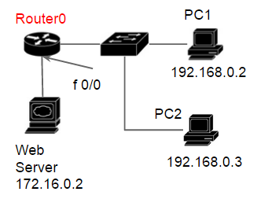

2.ACCESS LIST

上の図のようなNWが構成されています。
現状、PC１と２の両方から、WebServerへhttpアクセスおよびPingが疎通します。
以下のような条件を満たすよう、Router0を設定してください。
●アクセスリスト100番を使用する
●WebServerへのhttpアクセスはPC1からのみ許容する。
●httpアクセス以外はどの通信も許容する。
●設定後は、「copy running-config startup-config」をする。
●スタティックルート、省略形コマンド(例「ter len 0」のような)による設定はできません。
「コマンドをすべて達成しました」のダイアログメッセージが表示されたら完了です。
解答
Router0>enable
Router0#configure terminal
Router0(config)#
Router0(config)#access-list 100 permit tcp host 192.168.0.2 host 172.16.0.2 eq www
Router0(config)#access-list 100 deny tcp any host 172.16.0.2 eq www
Router0(config)#access-list 100 permit ip any any
Router0(config)#
Router0(config-if)#ip access-group 100 out
Router0(config-if)#end
Router0#copy running-config startup-config
|